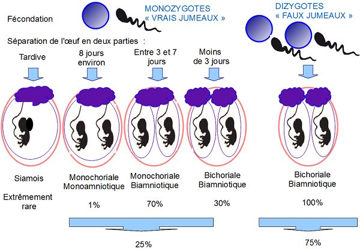

Twins Association Dna
Embryologie des jumeaux
Parce que ce nߴest pas si simple de comprendre les mots presque barbares que sont monozygotes, dizygotes, monochoriale, biamniotique même si cߴest la première chose dont on vous a parlé à lߴannonce de votre grossesse gemellaire ! Alors avec un petit schéma çà devient plus simple.
Le sujet est complexe, disons-le dߴemblée.
Deux grandes catégories : Fréquence
2 ovules+ 2 spermatozoïdes = jumeaux dizygotes (faux, terme péjoratif) 67-75 %
1 ovule + 1 spermatozoïde = jumeaux monozygotes (vrais) 25-33 %
Si le placenta est vraiment unique, quߴil existe 2 poches séparées (2 amnios) ou une seule
poche (1
amnios), la grossesse est monozygote. Cߴest le seul diagnostic de certitude. Le sexe des enfants
est
toujours identique.
Sߴil existe deux placentas (fusionnés ou séparés), 2 poches séparées (2 amnios et 2 chorions, la
grossesse peut être :
a) soit dizygote (le plus fréquent) : le sexe des enfants sera ou non différent. Si la nidation des œufs sߴopère en des points très proches, on peut avoir lߴimpression à la naissance, quߴil nߴy a quߴun seul placenta : lߴerreur consistera à croire quߴil sߴagit de monozygotes
b) soit monozygotes : le sexe des enfants est toujours identique.
Pour les enfants du même sexe, des différences morphologiques à la naissance permettent parfois dߴorienter le diagnostic sinon des examens complémentaires sont à faire. Les marqueurs sanguins et immunologiques sont un très bon moyen pour distinguer les 2 catégories de jumeaux. Malheureusement ces analyses sont très chères et ne sont pas effectuées de façon routinière. Parfois le placenta est envoyé en anatomopathologie pour un examen microscopique. Le résultat permet parfois dߴorienter le diagnostic de zygosité.
Chez T.A.D on se penche plus particulièrement sur les cas des :
Vrais jumeaux
Des jumeaux Monozygotes = Jumeaux homozygotes = 1 seule oeuf = vrais jumeaux-
Bichoriale-biamniotique : 2 placentas + 2 sacs amniotiques
Souvent diagnostiqué comme étant de "faux" jumeaux, mais leurs ressemblances à la naissance sautent aux yeux de tout un chacuns. - Monochoriale-Biamniotique : 1 placenta + 2 sacs amniotiques
- Monochoriale – Monoamniotique : 1 placenta + 1 sac amniotique
Comment les différencier ?
{kind=link}
schéma embryologie -
Explication : signifie que les jumeaux monozygotes peuvent se développer si la séparation est précoce comme les dizygotes.
Qui sommes nous ?
Twin Association Dna regroupent les cas de "vrai" jumeaux mais plus particulièrement les cas les plus rares tel que : les Siamois, les cas de grosseses Monochoriale et Monoamniotique ou Bichoriale et Bichoriale-Biamniotique.
Nous sommes une association de parents de jumeaux monozygotes, nous avons créé cette association pour aider les parents de jumeaux monozygotes à mieux comprendre leur grossesse et leur enfant.